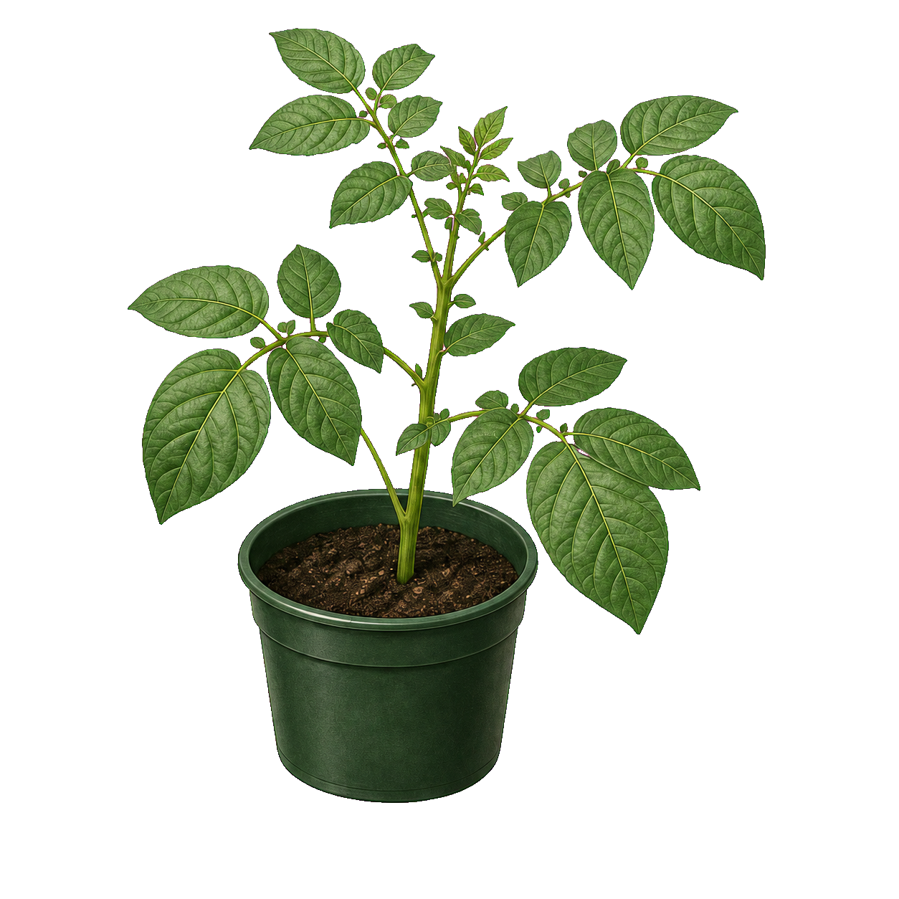

Phần 3: Báo cáo và giải thích — đọc kết quả, giải thích vai trò từng bước và rút ra kết luận.
| Vùng lá | Màu quan sát |
|---|---|
| Được chiếu sáng | ? |
| Bị che sáng | ? |
Hoàn thành từng bước bên trái — nội dung giải thích và kết luận sẽ xuất hiện tại đây.

Module tiếp theo: Sự thải oxygen trong quang hợp (SH11_B05_M04).
Truy cập aiducation.edu.vn